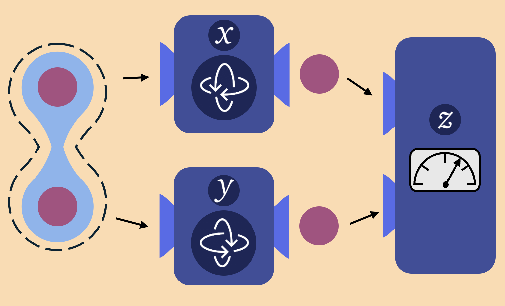

Bound entanglement can boost communication
When two objects interact, some of their physical properties can become correlated, establishing an invisible connection between them. If one of these properties is measured in one object, the corresponding property in the other becomes instantaneously affected, even if they are at opposite ends of the universe. This mysterious connection, commonly known as entanglement, is a fascinating phenomenon discovered over a century ago and still defying our notions of reality. Entanglement is also an extremely useful resource in quantum information, and can appear in various forms. Certain states (known as “bound entangled states”) exhibit a form of entanglement which is restricted, i.e., cannot be strengthened operating individually in both objects. Bound entangled states have for long been deemed useless in communication tasks. Here we show that this is no longer true, proving a significant communication advantage when bound entangled states are employed.
Read more here about how bound entanglement can be useful to boost communication, and here about how this usefulness can become an unbounded advantage.
